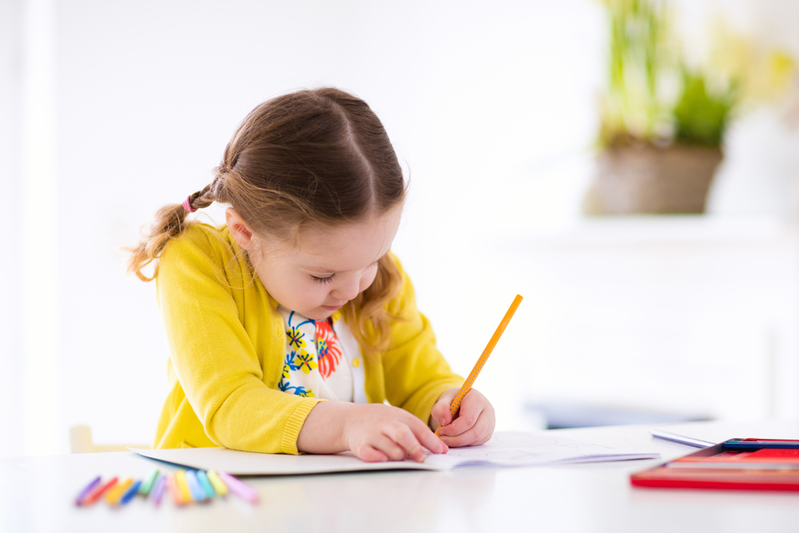

El aprendizaje de los números es una de las tareas más difíciles y a la vez importantes de la educación infantil. A todos los padres nos llena de orgullo ver a nuestro hijo señalar con los dedos los años que tienen e incluso resulta gracioso y enternecedor ver a los más pequeños intentar contar hasta diez durante el primer curso de la educación primaria.

¿Qué mayor alegría que aquella reflejada en la sonrisa de un niño? Uno de los primeros aprendizajes que hacen a un pequeño muy feliz es el reconocimiento de las vocales, pocas cosas les resulta más emocionante que declamar esas 5 letras. En Árbol ABC encuentras juegos de las vocales en línea a través de los cuales tus pequeños aprenderán mientras se divierten.
Los juegos refuerzan el aprendizaje de los niños de forma lúdica y mejoran la retención de los conceptos. Enseñar los números, las letras o las tonalidades no tiene porqué ser aburrido como demuestran estos entretenidos juegos para aprender los colores destinados a niños de preescolar.
Aprender a escribir es fundamental, pero estar preparado para ello también. Antes de poder hacerlo, es necesario que el niño domine y controle su cuerpo, sus movimientos, tenga destreza manual y sea capaz de desplazar la mano o un trazo en un sentido deseado. En cualquier caso, no es cuestión de aprender a escribir por que sí, sino darle al niño las armas necesarias para poder hacerlo.